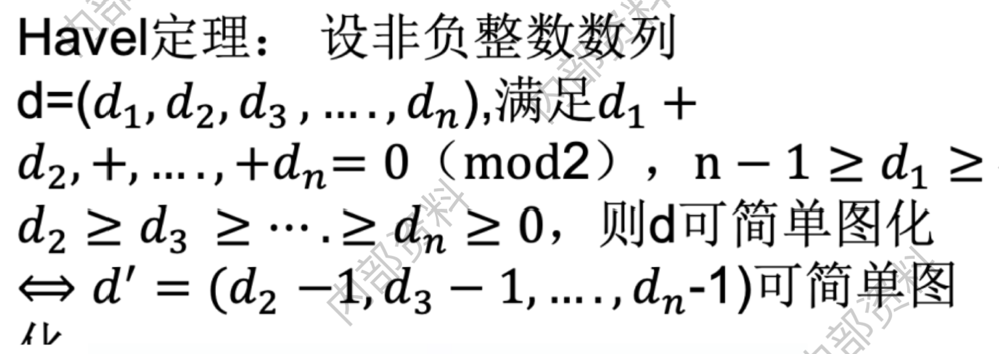
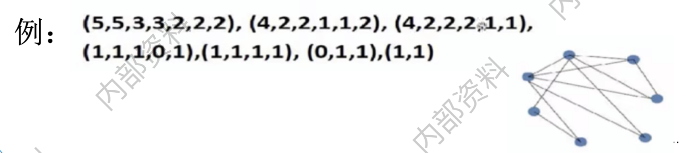
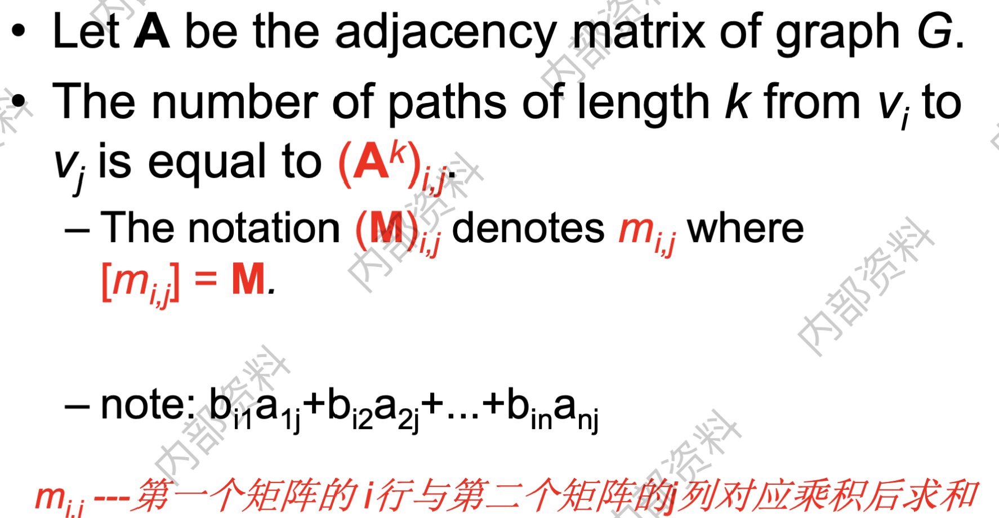
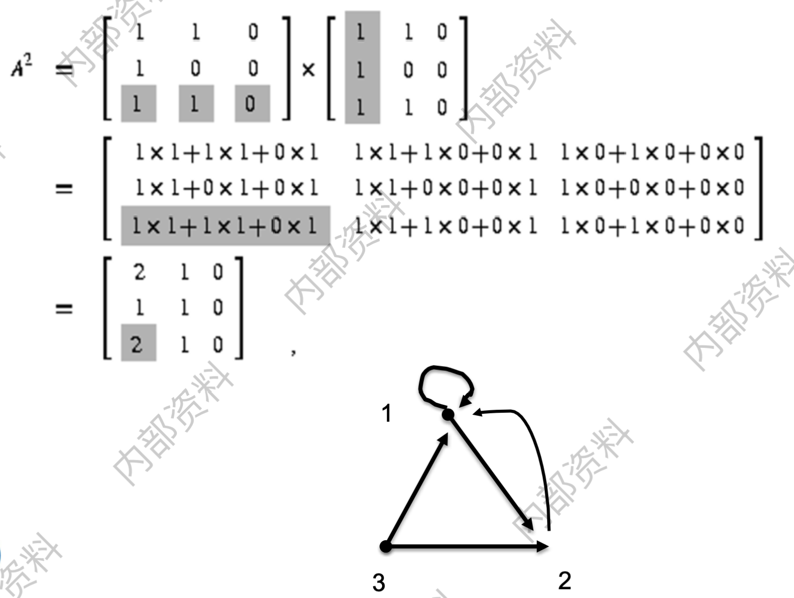

10.1.1 度序列可简单图化
可简单图化的充要条件：
例题：
解法：每次度序列按非递增顺序排列，删除度最大的节点，更新其他节点的度，重新排列，继续重复上述过程。有2种不合理的情况：
（1）某次对剩下序列排序后，最大的度数（设为d1）超过了剩下的顶点数；
（2）对最大度数后面的d1个数各减1后，出现了负数。应用：Frogs' Neighborhood
Description
未名湖附近共\(N\)个大小湖泊\(L_1, L_2, \cdots, L_n\)(其中包括未名湖)，每个湖泊\(L_i\)里住着一只青蛙\(F_i(1 \le i \le N)\)。如果湖泊\(L_i\)和\(L_j\)之间有水路相连，则青蛙\(F_i\)和\(F_j\)互称为邻居。现在已知每只青蛙的邻居数目\(x_1, x_2, \cdots, x_n\)，请你给出每两个湖泊之间的相连关系。
Input
第一行是测试数据的组数\(T(0 \le T \le 20)\)。每组数据包括两行，第一行是整数\(N(2 < N < 10)\)，第二行是\(N\)个整数，\(x_1, x_2,\cdots, x_n(0 \le x_i \le N)\)。
Output
对输入的每组测试数据，如果不存在可能的相连关系，输出"NO"。否则输出"YES"，并用\(N\times N\)的矩阵表示湖泊间的相邻关系，即如果湖泊\(i\)与湖泊\(j\)之间有水路相连，则第\(i\)行的第\(j\)个数字为\(1\)，否则为\(0\)。每两个数字之间输出一个空格。如果存在多种可能，只需给出一种符合条件的情形。相邻两组测试数据之间输出一个空行。
Source
参考代码
#include <cstdio>
#include <cstring>
#include <iostream>
#include <algorithm>
using namespace std;
struct node {
int degree, id; // 顶点的度数和标号
} v[20];
int map[20][20];
bool cmp(node a, node b) {
return a.degree > b.degree; // 按度数降序排序
}
int main() {
int t, n, flag;
scanf("%d", &t); // 输入测试数据组数
while (t--) {
scanf("%d", &n); // 输入当前测试的顶点数量
for (int i = 0; i < n; i++) {
scanf("%d", &v[i].degree); // 输入每个顶点的度数
v[i].id = i; // 记录顶点编号
}
memset(map, 0, sizeof(map)); // 初始化邻接矩阵
flag = 1;
// 贪心算法：依次处理每个顶点，尝试连接符合要求的邻接顶点
for (int k = 0; k < n; k++) {
sort(v + k, v + n, cmp); // 对剩余的顶点按度数排序
int i = v[k].id; // 当前要连的顶点编号
int d1 = v[k].degree; // 当前节点的度数
if (d1 > n - k - 1) { // 如果当前节点的度数大于剩余顶点数，无法构图
flag = 0;
break;
}
// 从当前顶点开始，逐步连接其邻居，并减少相应邻居的度数
for (int r = 1; r <= d1 && flag; r++) {
int j = v[k + r].id; // 当前要连接的顶点编号
if (v[k + r].degree <= 0) { // 如果有度数为负的节点，说明构图失败
flag = 0;
break;
}
v[k + r].degree--; // 减少邻居的度数
map[i][j] = map[j][i] = 1; // 在邻接矩阵中标记连接
}
}
if (flag) {
printf("YES\n");
// 输出邻接矩阵
for (int i = 0; i < n; i++) {
for (int j = 0; j < n; j++) {
if (j) printf(" ");
printf("%d", map[i][j]);
}
printf("\n");
}
} else {
printf("NO\n");
}
if (t) printf("\n"); // 如果不是最后一组数据，输出空行
}
return 0;
}10.1.2 计算两点之间长度为k的通路数Counting Paths by Adjacency Matrices

类似求传递闭包。